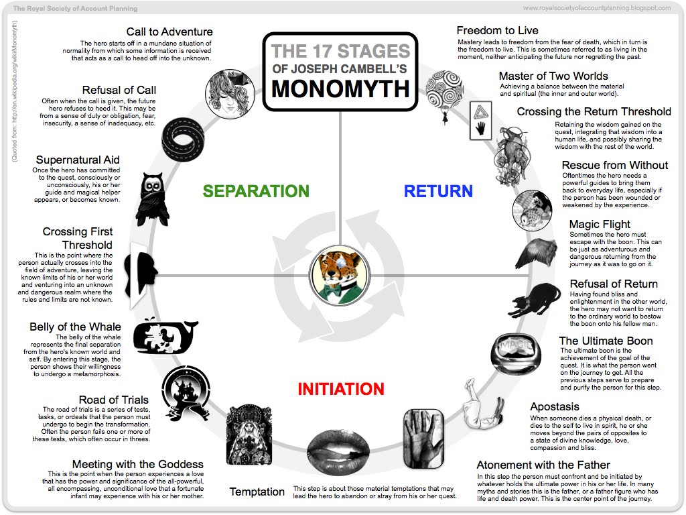
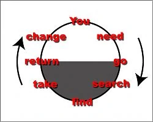

Story Mechanics¶
While ChatGPT is GREAT for overcoming writers block and getting SOMETHING down, so far I've found it doesn't really have a coherent sense of what I'm calling 'Story Mechanics'. This is something I'm trying to learn as well.
The Monomyth is not for resale¶
Way back in high-school, we'd get overstocked paper-back books delivered to our library with an inch cut off the front cover and "NOT FOR RESALE" stamped on the first page - any that the library didn't want to put into circulation were piled on tables and a few times a year students could come in and take as many as they wanted. Amongst the 300-some-odd books I carried home over the course of 2 years were the 4 volumes of Joseph Campbell's The Masks of God. I've also had the good fortune to have met a small group of lifelong friends with similar interests and ways and thinking while in high school (who may or may not be loose inspiration for 'the crew' of 50-60 year olds), so Campbell's name and the idea of the monomyth have been part of my world for almost as long as I can remember.

Harmon's Simple Circle¶
As a fan of first Community and then Rick & Morty, I ran across Harmon's story circle much, much later but still several years ago. It shares the 'departure from the ordinary, descent into 'the underworld', return to where you started but with fire to change the world' structure, but simplifies it to a simple 8-note melody of "you need to go search, find, take, and return to change":

Pacing, Chapters, and Scenes¶
This is something I've just started to unpack. As a first exploration, I picked a read-within-the-last-two-years book that was an easy read and seemed to have a good pace, Walkaways by Cory Doctorow. I did a little light analysis to picture a shape for the story, which has 78 scenes spread across 52 chapters in 7 acts (omitting the epilogue), which were distributed like this. I'm not quite sure how I'm going to action this insight yet.


Book and chapter length¶
After a little unstructured and undocumented web-searching, I seem to recall some adages that young-adult science fiction has a sweet-spot of between 80,000 and 100,000 works. Given the 17 chapters and the rule of 3, I'm initially targeting about 50 scenes of 2000 words each spread across ~17 chapters with 3 scenes apiece. This is just a general guideline to get me rolling.
Rock and Roll!¶
Another creative forcing function I'm going to embrace is mapping each of the chapters to a song. Given the gang's proclivity, Sex Pistols, Ramones, etc. should figure prominently, but for some reason Mr Blue Sky popped to mind when I thought about the county normies being oblivious to the changes just wrought on the world. This may have something to do with the bittersweet optimism of being just on the edge of the important things happening felt by Elton Pope as he listened to the song.